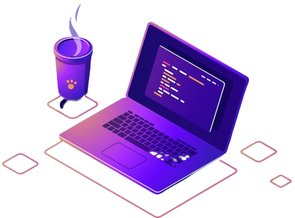

En el 2022 iniciamos un pequeño proyecto el desarrollo de un pagina web en la Universidad del Magdalena
para dar una guía en español para aquellas personas curiosa
que le gusta el mundo de la informática. Donde puede transformar equipos que usan los sistema opertivos como windows y linux a un
equipo que puede ejecutar el sistema operativo Mac OS x como si fuera una iMac, Macbook Air, Macbook Pro real en todo los aspecto de
trabajo multimedia